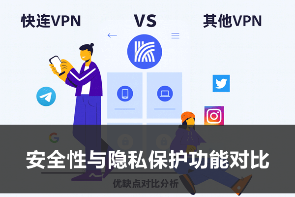

快连VPN和Surfshark区别大吗？
快连VPN和Surfshark的主要区别在于性能、服务器分布和价格。快连VPN主打国内网络优化，适合中国用户，提供较快的连接速度。Surfshark则全球服务器覆盖更广，支持无限设备连接，提供更多的安全功能，如多跳VPN、广告拦截等。两者在隐私保护方面都表现不错，但Surfshark的性价比和功能更丰富。
Table of Contents
快连VPN与Surfshark的基本介绍
如果只看首页文案，快连 VPN 和 Surfshark 都会给人一种“上网更自由、更安全、更顺畅”的印象，但两者讲故事的方式很不一样。快连更强调快速接入、连接成功率、真人客服、使用门槛低，整体语言更像是在解决“我现在就想连上”的现实问题；Surfshark 则更明显走国际化安全产品路线，除了基础 VPN，还会把无日志、RAM-only 服务器、广告拦截、NoBorders、多跳、协议选择这些能力一起摆出来，给人的感觉更像一个功能完整、体系清晰的长期方案。两者不是完全不能比较，而是比较之前你得先承认，它们从一开始就没把重点押在完全相同的方向上。
对普通用户来说，这种差别很容易在第一次使用时就感受到。快连通常更像“打开、登录、连接、能用就行”的思路，尽量减少学习成本；Surfshark 则会让你明显感觉到它把很多功能层都摊在你面前，适合愿意自己做更多选择的人。你如果是第一次接触 VPN，可能会觉得快连更直接；你如果本来就经常用这类工具，也许会更关注 Surfshark 那些可调节、可扩展、可细分的功能点。所以基本介绍这一步，别只看谁页面更好看，重点是先看它们到底在卖“简单上手”，还是在卖“完整能力”。
快连VPN的主要特点
快连 VPN 给人的第一感受，通常是很少跟你讲太多复杂术语，而是直接强调“快”和“稳”。它公开页面里最突出的内容，不是几十个专业名词，而是一键快连、智能匹配最快节点、短时间内建立连接、真人客服和多设备使用这类更偏结果导向的表达。这种产品风格很适合那些不想研究太多协议和设置的用户。你打开工具，希望它尽量少问问题、少让你选择，最好直接给出一条可用线路，快连就是朝着这个方向设计的。
另外，快连的优势还在于它对“短期使用”和“即开即用”的理解更强。很多用户不是长期深度折腾 VPN，而是某段时间需要比较稳的访问环境，或者更看重连接成功率和处理问题的速度。这时，24 小时真人客服、短周期会员、强调受限网络环境下的稳定体验，这些点会显得非常现实。它并不是不讲安全，而是把安全、速度和连接率都包装成更容易被普通用户立刻理解的结果，而不是一堆需要自己消化的参数。
Surfshark的主要特点
Surfshark 的气质和快连明显不一样。它公开呈现出来的不是“少选项、快上手”这一种体验，而是一整套比较完整的 VPN 能力矩阵。比如协议层直接告诉你有 WireGuard、OpenVPN、IKEv2；功能层又有 Kill Switch、CleanWeb、NoBorders、Bypasser、Dynamic MultiHop 等不同模块；平台层还把 Windows、macOS、Linux、Android、iOS 以及浏览器扩展全列出来。你会很明显地感觉到，它不是只想解决“先连上”，而是希望用户在长期使用里拥有更完整的安全和控制面板。
Surfshark 另一个很鲜明的特点，是它对“家庭共享”和“多设备长期使用”的强调。无限同时连接本身就说明它在设备策略上更宽松，适合一个订阅覆盖更多终端。再加上公开的 no-logs 审计、RAM-only 服务器和协议透明度，它更容易赢得那些愿意花时间理解产品细节的人。你可以说它更复杂，但也可以说它更完整。对于喜欢看功能表、希望自己能做更多配置判断的用户来说，Surfshark 这种风格反而会更安心，因为很多关键能力都是摆在明面上的。
两者的市场定位与用户群体
如果一定要把两者的用户画像说得更直白一点，快连更像是面向“我主要想省事、快点连上、遇到问题有人回”的用户，Surfshark 更像是面向“我除了能用，还想知道它到底怎么保护我、还能做什么扩展功能”的用户。前者偏体验结果，后者偏功能体系。前者更容易吸引不想研究太多技术细节的普通使用者，后者更适合已经习惯对 VPN 做更细颗粒度比较的人。
这并不代表快连就只适合新手，也不代表 Surfshark 就只适合极客。更准确地说，两者吸引人的点不一样。快连吸引你的是“别让我折腾”，Surfshark 吸引你的是“我想看得更清楚”。所以区别大不大？如果你只是想找一个能用的 VPN，短期内体感也许没有你想象中那么夸张；但如果你会长期在速度、设备、协议、隐私和扩展能力上反复衡量，那两者的差别其实不小，而且会随着使用时间拉长越来越明显。

安全性与隐私保护功能对比
VPN 这一类产品，最后绕不开的终究还是安全和隐私。只是不同产品有不同表达方式。有的把安全讲成“我们很稳、很安全”，有的则把安全拆成协议、开关、服务器架构、审计记录、日志政策逐项摆出来。快连和 Surfshark 在这里的差异，其实就延续了它们整体风格上的区别。快连更强调私有通讯协议、连接稳定和不记录隐私这类结果；Surfshark 则把具体协议选项、Kill Switch、NoBorders、无日志审计、RAM-only 服务器这类更可见的安全组件放到台前。你如果只是想知道“哪个更安全”，这题不会有绝对简化答案；但如果你想知道“哪个安全能力更透明、可解释、可细看”，两者差异就非常明显了。
而且安全这件事，并不是只有一个“强”字。对有些人来说，安全感来自产品本身就是为复杂网络环境优化过；对另一些人来说，安全感来自功能开关可见、协议明白、政策清楚、审计有凭据。快连更像前者，Surfshark 更像后者。你选哪一种，其实取决于你更相信“结果导向的可靠”，还是更在意“过程层面的透明”。
加密技术与协议支持
从协议和技术透明度来看，Surfshark 明显给用户的信息更多。它公开列出 WireGuard、OpenVPN、IKEv2，并且还把 WireGuard 放在速度和现代加密表现上重点强调。这意味着用户不只是在“用一个 VPN”，而是可以理解自己大致在用哪种连接方式，甚至在有需要时做手动选择或排查。对愿意研究细节的人来说，这种透明感很重要，因为协议本身就会影响速度、稳定性和不同网络环境下的表现。
快连在这方面的公开表达则更偏“私有通讯协议”和“智能匹配节点”这种结果层描述。它没有把协议菜单和技术选项大张旗鼓地放在前台，而是更强调用户不需要管太多，系统会帮你尽快匹配到可用线路。这样的好处是门槛低，不会让普通用户一上来就被一堆名词劝退；但代价是，如果你特别在意协议层透明度，或者习惯自己做连接策略判断，Surfshark 会显得更有信息量。说到底，这里不是谁“有”谁“没有”的区别，而是谁更愿意把底层选择权暴露给用户。
DNS泄漏保护与隐私政策
在 DNS 泄漏、隐私策略这类问题上，Surfshark 的公开说明通常会更完整一些。它不仅讲 kill switch、无日志、RAM-only 服务器，也把 no-logs 和隐私保护放进更大的一整套叙事里。对于用户来说，这意味着你更容易找到“它到底怎么说自己不记录”“它公开了哪些隐私承诺”“它靠什么降低暴露面”这些信息。哪怕你不是技术用户，只要稍微看一下公开资料，也会觉得它对安全这件事有一套比较成体系的表达。
快连的做法则更偏简化：页面里会强调不记录、私有协议、保护隐私、擦除痕迹，但不会像 Surfshark 那样把安全能力拆得非常细。这样做当然有它的优点，因为很多普通用户根本不想把 DNS、内核协议、服务器架构都研究明白，他们只在意“我开了以后是不是尽量不暴露”。快连更像是在回答这个结果；Surfshark 则更像是把理由一条条列给你看。两者在用户心里的安全感来源，是不一样的。
无日志政策与数据存储
如果你非常重视“无日志”这几个字的可验证程度，那 Surfshark 的优势会更明显。它公开提到 no-logs 政策经过独立第三方审查，而且在 2023 和 2025 都做过相关验证，这种信息会让很多注重隐私的用户更容易建立信任。再加上 RAM-only 服务器这种基础设施表达，它在“我们为什么说自己不留用户活动痕迹”这个问题上，提供了相对更具体的说法。对比很多只讲口号的产品，这种公开透明度会更有说服力。
快连在无日志和隐私这部分也不是完全不讲，只是它的公开表达方式更接近“我们不存储个人信息、重视隐私保护、用私有通讯协议保障访问安全”。这类说法对于以结果为导向的用户通常已经够用，但如果你习惯把服务提供者的隐私承诺拆开细看，Surfshark 的材料会显得更完整。所以这部分区别不在于“快连重不重视隐私”，而在于“Surfshark 更愿意把可验证的结构化信息放出来”。对不同用户来说，这个差距的感受会非常不一样。
连接速度与性能对比
说到 VPN，速度永远是绕不开的话题。但速度这件事最怕被说得太简单。因为你看到的“快”，既可能是连接建立得快，也可能是下载表现稳，还可能是高峰期不容易崩。快连和 Surfshark 在速度叙事上的差异，其实也很符合它们各自的产品风格。快连强调的是“3 秒连接”“一键快连”“智能匹配最快节点”，这更像是在说“我让你更快进入可用状态”；Surfshark 强调的则是协议层轻量化、4500+ 服务器、10Gbps 端口、Fastest servers 这些，更像是在说“我在更大范围内给你提供持续性能基础”。两者都在讲速度，但讲的是不同维度的速度。
用户最后体感上的区别也正来自这里。你如果最看重的是“点一下之后快点能用”，快连这种逻辑会很讨喜；你如果更在意“持续看视频、跨平台挂着用、长时间连接别抽风”，那 Surfshark 那种更偏基础设施和协议层的速度表达会更打动你。速度本身不是一个孤立数字，而是一整套连接体验。你想要的是首连快，还是长跑稳，这个问题比单纯问“谁更快”更有用。
快连VPN的连接速度表现
快连的速度优势，通常首先体现在“上手即连”的体验上。它把 AI 智能匹配和一键快连放在很靠前的位置，这说明它不是想让用户先做一堆判断，而是尽量把“从打开到可用”这一段压缩到更短。对很多普通用户来说，这种首连感受比复杂测速图更有意义。因为你日常用 VPN，不一定天天做带宽测试，但一定会在意“今天能不能马上连上”“我是不是还要自己选来选去”。快连就是在解决这件事。
当然，这种设计也意味着它更像一个“让系统代你判断”的产品。你可以获得更省脑的连接体验，但在个别情况下，用户能自己干预和微调的空间就未必像 Surfshark 那么多。也就是说，快连的速度价值不是建立在“给你所有控制权”上，而是建立在“尽量减少等待和试错”上。如果你是那种不想研究节点、不想来回试协议、只想赶紧进入可用状态的人，这种体验通常会很舒服。
Surfshark的连接速度表现
Surfshark 的速度思路更偏“长期稳定的高性能框架”。它公开列出大量服务器、10Gbps 端口、WireGuard 作为更快协议，并在不同下载页和功能页里不断强调 smooth browsing、streaming 和 minimal speed drops。这种表达很像是在告诉用户：速度不是只靠一两条线路运气好，而是靠更大规模的服务器布局和更成熟的协议选择去支撑。对于经常在不同设备之间切换、长时间挂 VPN、或者要兼顾浏览、视频、文件访问的人来说，这种思路会更有吸引力。
不过也要说实话，Surfshark 的速度优势往往更适合愿意做一点自我配置的人来发挥。因为它既然给了你协议、NoBorders、Bypasser 等不同层级的设置，就意味着在不同网络环境下，你可能会通过选择不同模式得到更好的体感。它不是那种一上来就什么都替你做完的产品，而是更像一个“给你更多速度工具箱”的产品。你会不会用这些工具，某种程度上也决定了你最终体验到的快慢。
如何选择更适合的服务
如果你最怕折腾，最在意的是“我现在就想用，而且别让我选一堆东西”，那快连通常会更对味。它的很多公开卖点都围绕“一键、快连、智能匹配、真人客服”展开，本质是在替你节省决策成本。你不想搞清楚 WireGuard 和 OpenVPN 的区别，也不想自己测半天哪个节点快，快连就是用更低门槛的方式来满足这种需求。对很多只想把事情尽快做成的人来说，这已经是非常重要的优点。
但如果你不是第一次用 VPN，而且你很清楚自己平时会在多个设备、多个场景里长期使用，也愿意为了更细的控制和更高的透明度花一点时间，那 Surfshark 的价值会更明显。你会更愿意看协议、看功能、看扩展、看平台支持细节，也更能接受它不是那种“所有事都替你自动判断”的产品。说到底，选择更适合的服务不是看哪个名字更响，而是看你希望产品替你做决定，还是你自己希望拥有更多决定权。
支持的平台与设备兼容性
平台支持这一块，往往是很多人前期不太重视、用久了却特别在意的部分。因为一开始你可能只在手机上用，觉得能连就行；但后面慢慢会发现，自己其实还想在电脑上开、平板上挂、浏览器里切、甚至给家里其他设备一起用。这个时候，平台兼容性就不再是“有就行”，而是会直接影响你后续的使用成本。快连和 Surfshark 在这里的差异，同样很能体现它们的产品逻辑：前者更聚焦主流常见设备，后者则把更宽的平台覆盖和多端同时连接当成很核心的卖点。
兼容性这件事不只是看“能不能装”，还要看“装上以后是不是用得顺”。有些产品平台列得很多，但不同端体验差异大；有些产品虽然支持范围没那么夸张，但主流设备上非常直接、省心。你真正该比较的，不只是设备清单，而是它与你自己设备生态的贴合程度。你是单人多设备，还是一家人共用；你主要是手机+电脑，还是还要浏览器扩展和电视端；这些都会让最后的感受差很多。
快连VPN支持的操作系统和设备
按照快连公开页面和下载入口的呈现，它对主流设备的覆盖是比较明确的，至少 Windows、Android、iOS、macOS 都是正面支持的。对于绝大多数普通用户来说，这已经足以覆盖“手机 + 电脑”的日常组合。再结合它强调多设备同时在线和一个账号共享会员的说法，可以看出它并不是只考虑单端用户，而是默认你会在几个常见设备之间切换使用。这样的支持范围，对不追求非常复杂设备生态的人来说，其实已经相当够用。
它的重点不是把所有可能平台都列出来，而是把最常见的终端尽量做得直接。你如果平时主要就是安卓手机、iPhone、Windows 笔记本和 Mac 之间切换，那快连在平台这部分不会成为短板。相反，它的简洁反而可能会让不少用户觉得好用，因为不必在一堆端口和扩展之间做过多判断。对“主流设备够用派”来说，这是一种很实在的兼容性。
Surfshark支持的操作系统和设备
Surfshark 在平台覆盖上明显走得更广。除了 Windows、macOS、Linux、Android、iOS，它还提供 Chrome、Firefox、Edge 浏览器扩展，并延伸到 Apple TV、Fire TV 等更多场景。对那些设备链路比较长的人来说，这种平台完整度会很有吸引力。你可以把它理解成：Surfshark 不是只服务一个“手机+电脑”用户，而是默认你整个数字生活都可能想要被统一纳入同一套订阅之下。再叠加无限同时连接，它对“全家桶式使用”会更友好。
当然，平台越多，也意味着产品的学习曲线和设置复杂度会略微提高。因为你不是只在一个界面里操作，而是在不同设备和扩展上保持一致体验。不过对已经习惯多端联动的人来说，这反而是加分项。尤其是那些会在浏览器扩展、桌面客户端、手机 App 之间切换的用户，Surfshark 这种多端生态会显得更完整，也更适合作为长期主力。
跨平台使用体验对比
跨平台体验不是简单比“谁支持更多设备”，更重要的是“你在不同设备间切来切去时，脑子要不要跟着切模式”。快连的优点在于主流设备上思路比较统一：尽量少设置、少判断，强调尽快连接。你从手机切到电脑，大概率不会遇到太多需要重新理解的东西。Surfshark 则会让你感受到不同端都在一个更完整的安全体系里，但同时你也更有可能在不同端去碰到协议、功能、扩展这类细节。前者更像“跨端也尽量保持简单”，后者更像“跨端都尽量提供完整能力”。
所以跨平台体验到底谁更好，其实和你自己的性格也有关系。你如果很讨厌在不同端重新适应设置，快连那种更统一、结果导向的思路会很省心；你如果反而喜欢在每个端都看到足够完整的工具箱，那 Surfshark 会让你觉得更值。两者的差异不在于谁“能跨平台”，而在于谁更符合你对跨平台的期待。
快连VPN适合哪些用户？
快连更适合那种希望尽量降低学习成本的用户。你不太想研究协议、不想频繁切服务器、不想一出问题就自己翻支持文档，最希望的是打开就能尽快连上，真有问题时还能找到真人客服接住。这类用户往往不把 VPN 当成“我要深入研究的技术产品”，而是把它看成一个需要稳定完成任务的工具。对他们来说，快连的核心价值不是功能清单有多长，而是尽量少打断、少折腾、少试错。
另外，快连也比较适合对受限网络环境连接成功率更敏感的人。你不一定在意它能不能给你列出很多协议名称，但你会在意它在复杂环境下是不是尽量省脑、尽量快进入可用状态。如果你更看重的是连接结果、客服响应、主流设备够用和短期订阅灵活性，那快连通常会更对路。
Surfshark在中国的使用情况如何？
这个问题不能回答得太绝对，因为受限网络环境本来就变化很快，而且任何 VPN 在不同时间、不同地区、不同设备上的表现都可能不完全一致。比较稳妥的说法是：Surfshark 官方支持页确实单独提供了“Connecting from China”和“在受限网络环境下如何连接”的帮助内容，并明确提到如果应用内直连不顺，可以尝试手动 WireGuard 连接。这至少说明两件事：第一，它并没有回避中国场景；第二，在这个场景里，用户可能需要比普通网络环境多做一步手动设置，而不一定总是“装好就一键无脑通”。
所以如果你的核心诉求就是在中国大陆这类受限环境里尽量少折腾地使用，Surfshark 当然不是不能考虑，但你需要接受它在部分时候可能更依赖手动协议配置和额外排查。相比之下，快连更直接地把“敏感时期也能用”“私有通讯协议”“一键快连”放在主宣传语里，表达得更偏向这一使用场景本身。两者在这里的差别不只是技术，而是产品面对复杂环境时的默认姿态：一个更像“给你方法和工具去应对”，一个更像“尽量替你把复杂度藏掉”。
快连VPN与Surfshark的性价比如何对比？
性价比从来都不是单看价格，而是看你买到的能力和你真的会不会用到。Surfshark 的长期套餐价格公开得更透明，而且长周期通常压得比较低，再加上无限设备、更多协议、更多功能和更广平台，对“多设备长期主力使用”这类用户来说，整体账其实很容易算得过来。你如果本来就打算长期订阅，而且会用到浏览器扩展、电视端、家庭共享、功能开关这些东西，那 Surfshark 的单价优势和功能密度会很明显。
快连则更适合另一种性价比逻辑：我不一定想买很长，我更看重短期灵活、连接省事、客服有人接、主流设备够用。这种情况下，你未必要追求最低月均价，而是会更在意“少折腾值不值”“我现在就能不能顺利用起来”。所以两者的性价比，其实对应的是两种不同消费思维。你如果是重功能、重多端、重长期摊薄成本，Surfshark 会更划算；你如果是重灵活、重连接体验、重省事和即时可用，快连未必输。性价比不是谁数字更漂亮，而是谁更像你真正会长期使用的那个方案。